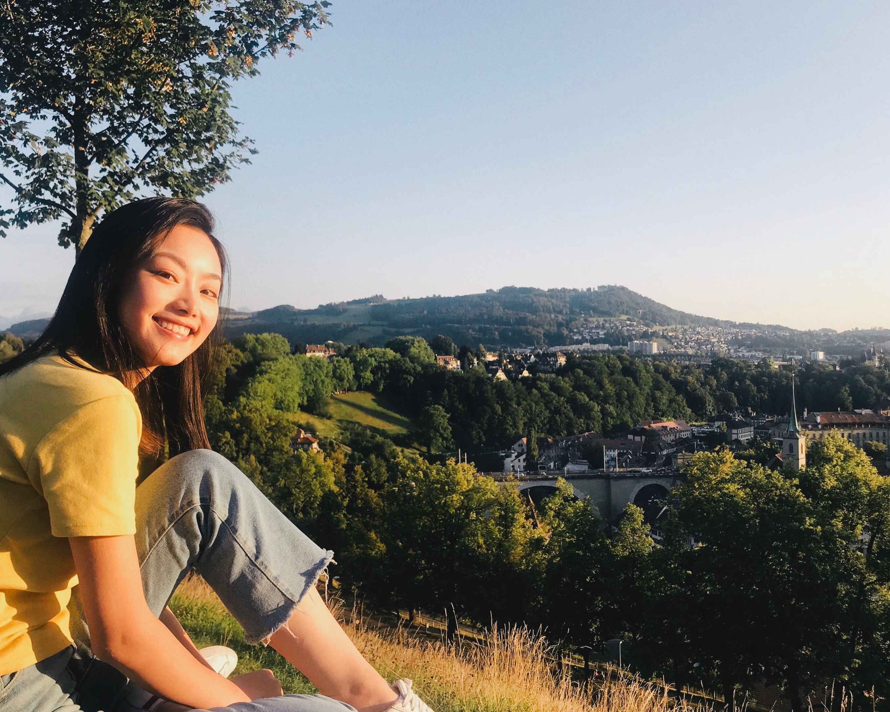

🇨🇳 Born and raised in Chongqing, China
🎓 Senior at University of Michigan with a major in Information Science focusing on UX Design and Entrepreneurship
🌟 Multidisciplinary designer with a focus on UX, product strategy and data-driven approaches
I explore my creativity in various domains including design, front-end dev, motion graphics, video production and entrepreneurship.
When I’m not working, you can find me:
• grabbing coffee ☕️
• creating fun photos and videos 📷🎬
• going on adventures 🧗🏄🌊⛰⛸🛹🎿